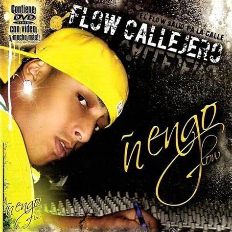

Nació en Río Piedras, barrio de San Juan y creció en Bayamón, donde tendría su inicio en la música. Fue allí donde desde muy joven se desarrollaría el interés por el mundo de la música urbana. Su contenido lírico fuerte y explícito vino de experiencias de su infancia en su barrio.3 Cuando tenía trece años fue presentado por primera vez en el escenario en el barrio donde vivía, momento en que descubrió su talento para la música.4 Con el paso del tiempo, llegó a ser escuchado por un sello, quienes se interesaron en la música del exponente y lo impulsarían.
Trayectoria
Debutó en 2004 con la canción «Tu cuerpo me está tentando» se hizo más famoso con la producción Los anormales.6 En 2005, participó para la producción Sangre nueva con la canción «Guerrilla», donde fue presentado por Voltio.7
Tu cuerpo me esta matando
2005: Flow Callejero.Flow Callejero es el álbum de estudio debut del cantante de reguetón Ñengo Flow que fue publicado el 6 de diciembre de 2005
2011: El combo que no se dejaEn su segundo album notifico a todos sobre su pasado ysu experiencia en la musica
Albums
El primer album que subio fue Flow Callejero en 2005 El álbum fue promocionado por medio de un video infomercial donde se ve a los artistas Don Omar y Cuban Link apoyando tal proyecto del artista. En el mismo se observa algunos momentos donde el artista aparece grabando algunas canciones y en otras tomas aparecen otros artistas y personas apoyando dicho proyecto.
El segundo album que creo fue el combo que no se deja en 2011, en este comps canciones muy famosas como la ironia que le alcnazo una 150 millones de reproducciones, este artista disfruto mucho tras legar a esas cantidades de personas en ver un tema suyo basado en su vida
Tiene 24 canciones siendo la cancion de nebulosa la mas famosa con un total de 14Millones de visualizaciones.
El El tercer album que creo fue Real G4 life Vol3, lanzado el 10 de febrero de 2017, que cuenta con canciones como Traicionera. Contó con una versión diferente para las plataformas digitales como ITunes, el cual se lanzó debido al uso de canciones como nuevas versiones como en el caso de la canción «Deuces» con De La Ghetto, la cual es una versión en español de la canción del cantante Chris Brown y nunca se pagó por derechos de autor, por lo que se lanzó una nueva edición del mixtape.